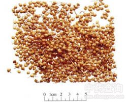

谷芽

拼音
Gǔ Yá
别名
粟芽
来源
本品为禾本科植物粟Setaria italica （L.） Beauv. 的成熟果实经发芽干燥而得。将粟谷用水浸泡后，保持适宜的温、湿度，待须根长至约6mm 时，晒干或低温干燥。
生境分布
全国产稻区均有生产，而以南方早稻谷加工的谷芽为好。
药材特点
稻 一年生栽培植物。秆直立，丛生，高约1m左右。叶鞘无毛，下部者长于节间；叶舌膜质而较硬，披针形，基部两侧下延与叶鞘边缘相结合，长5-25mm，幼时具明显的叶耳；叶片扁平，披针形至条状披针形，长30-60cm，宽6-15cm。圆锥花序疏松，成熟时向下弯曲，分枝具角棱，常粗糙；小穗长圆形，两侧压扁，长6-8mm，含3小花，下方两小花退化仅存极小的外稃而位于1两性小花之下；颖极退化，在小穗柄之顶端呈半月形的痕迹；退化外稃长3-4mm，两性小花外稃，有5脉，常具细毛，有芒或无芒，内稃3脉，亦被细毛；鳞被2，卵圆形，长1mm；雄蕊6；花药长2mm；花柱2枚，筒短，柱头帚刷状，自小花两侧伸出。颖果平滑。花、果期6-10月。
性状
本品呈类圆球形，直径约2mm,顶端钝圆，基部略尖。外壳为革质的稃片，淡黄色，具点状皱纹，下端有初生的细须根，长约3～6mm，剥去稃片，内含淡黄色或黄白色颖果（小米）1粒。无臭，味微甘。
性味
甘，温。
功能主治
消食和中，健脾开胃。用于食积不消，腹胀口臭，脾胃虚弱，不饥食少。炒谷芽偏于消食，用于不饥食少。焦谷芽善化积滞，用于积滞不消。
用法用量
9～15g。
化学成分
含淀粉、蛋白质、脂肪、淀粉酶及维生素等。
药理作用
1：本品所含的β-淀粉酶能将糖淀粉完全水解成麦芽糖：α淀粉酶则使之分解成短直链缩合葡萄糖，但本品所含的α-和β-淀粉酶量较少，其消化淀粉的功能不及麦芽
摘录
《中国药典》